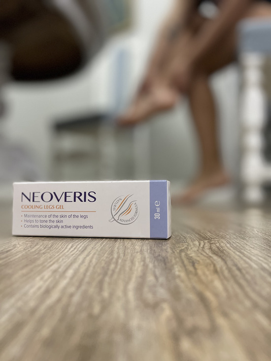
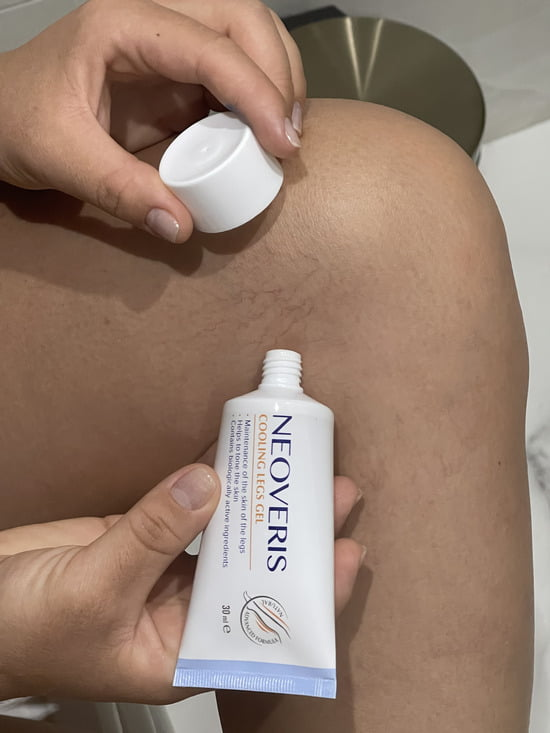
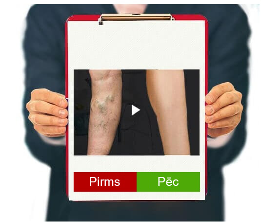
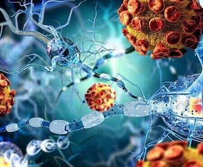
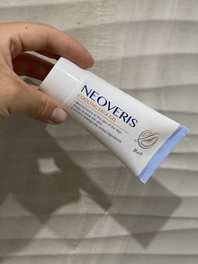

Saudzējiet savas kājas un sakiet "nē"
varikozajai vēnu paplašināšanās
NEATKARĪGA TESTĒŠANA
Sveiciens visiem! Meitenes, vai esat kādreiz sevi pieķērušas pie domas, ka jums ir žēl
sieviešu pēc 40, kuras knapi var paiet pa trotuāru un baida visus ar savām zilajām kājām? Man ir īpaši
briesmīgi uz viņām skatīties, jo es zinu ne pēc nostāstiem, ka dzīvot ar varikozi ir mokoši! Tieši
tādēļ es vēlos dalīties ar to, kā var atbrīvoties no varikozes uz visiem laikiem.
Vispirms slikti jaunumi: varikoze visbiežāk ir iedzimta, un ja tā ir kādam ģimenē, jūs
esat apdraudēti. Tagad labi jaunumi: es zinu, kā no tās atbrīvoties.
Tā izskatījās mani gurni 14 gadu vecumā. Jā, kad es biju pusaudze, es sāku pamanīt, ka
manas kājas ātri "paliek zilas". Šie briesmīgie asinsvadu tīkliņi un zili vēnu paplašinājumu
loki. Es kautrējos no savām slaidajām, sportiskajām kājām, slēpjot tās džinsos. Mamma sacīja, ka tas
ir hormonu dēļ un drīz pāries. Tomēr ar katru gadu asinsvadu tīkls kļuva aizvien lielāks un lielāks,
līdz pārklāja visus gurnus.
Daudzi cilvēki uzskata, ka varikoze - tā ir tikai estētiska problēma, un
tādēļ neko nedara, lai apturētu saslimšanas progresēšanu, tā vietā slēpjot skartās ķermeņa vietas
zem apģērba.
Tromboze Asinsvadi ir paplašināti un skaidri ir saredzami zem ādas
Ādas virsmas
bojājums izraisa stipru asiņošanu
Tropiskā čūla rodas dēļ problēmām, kas ir saistītas ar asinsriti un
audu barošanās bojājumiem.
Un ne tikai tas vien! Naktīs man sāpēja, tirpa, piepampa un kļuva karstas kājas. Un tā
dienu pēc dienas... Es, kā mācēju, mēģināju atvieglot situāciju. Katru dienu vannoju kājas, lietoju
venotonikus, izmantoju speciālus gelus, nēsāju kompresijas zeķes. Tomēr nekas nelīdzēja. Man nebija
patīkami skatīties uz manām kājām. Manas vēnas aizvien vairāk palielinājās ar katru dienu.
Pēc daudziem neveiksmīgiem mēģinājumiem tikt galā ar varikozi, es pavisam zaudēju
cerības. Tomēr risinājums radās tur, kur es to negaidīju.
- MŪSDIENĪGS RISINĀJUMS
Vairums produktu pašlaik spēj tikai novērst varikozes simptomus, likvidēt tūskas un atvieglot
sāpes.
ATŠĶIRĪBĀ NO
TIEM,PIEMĪT
PLAŠS IEDARBĪBAS SPEKTRS
1. Veicina asinsvadu iekaisuma
noņemšanu un visu pavadošo simptomu likvidēšanu.
2. Veicina asinsriti un asinsvadu
sieniņu nostiprināšanu.
Es biju atvaļinājumā un lūdzu jauno menedžeri atnest atskaiti no biroja uz manām mājām.
Viņa nejauši zem halāta pamanīja manas kājas un teica, ka pirms mēneša ir nopirkusi mammai gelu pret varikozi, kas viņai ir palīdzējis jau 2
nedēļu laikā. Es arī nolēmu izmēģināt šo gelu un to pasūtīju caur internetu. Pasūtījums pienāca
diezgan ātri, jau 2 dienās.
Pateicoties savai tekstūrai, gels ir ļoti maigs un tam ir patīkams aromāts. Tas ir
pietiekami viegls, labi uzklājams uz ādas. Gels pilnīgi uzsūcas 5 minūšu laikā, neatstājot lipīgumu un
neveidojot nepatīkamu plēvīti.

Es smērēju no rīta un vakarā. Tā
lietošana ir ekonomiska, lai iegūtu efektu, pietiek uzklāt plānu kārtiņu.
Un efekts ir. Pirmā sajūta - gandrīz uzreiz kājās izzūd noguruma un smaguma sajūta, šādu
efektu dod Āzijas centīlijas ekstrakts. Burtiski acīmredzami pazūd tūska. Jums parādās svaiguma
sajūta, pateicoties pievienotajam zirgkastanim, kājas kļūst gaišākas.

Jūs man neticēsiet, bet nākamajā dienā es sajutu patīkamu vieglumu, kājas līdz pat
vakaram nepietūka. Iepriekš darbā potītes momentā pietūka, tagad pat vēnas ne tik ļoti piepampst. Es
turpināju katru dienu lietot gelu. Un ziniet, kas notika? Pēc dažām nedēļām es aizmirsu par sāpēm
kājās un asinsvadu tīkls sāka izbalēt. Pēc mēneša es vairs nepazinu savas kājas. No piepampušajām
vēnām nekas vairs nebija atlicis. Un sarkani-zilais tīklojums uz gurniem - it kā vairs nepastāvēja.
Šādu rezultātu es nebiju gaidījusi. izrādījās
patiesi labs, bet pats galvenais - lēts risinājums.
ACĪMREDZAMS EFEKTS
1.Palīdz uzlabot asinsvadu stāvokli un asinsriti. ietekmē organisma mikrocirkulāciju,
veicina kapilāru nostiprināšanos un to caurlaidības samazināšanos.
2.Veicina asinsvadu sieniņu iekaisuma noņemšanu, asinsvadi zem ādas
kļūst daudz mazāk pamanāmi. Tam pateicoties, atjaunojas asinsrite un tādējādi tiek
stimulēta smadzeņu, zarnu trakta darbība un sirdsdarbība.

PirmsPēc
Dabīgie ekstrakti gela sastāvā palīdz uzlabot asinsriti. Tādējādi - gels ne tikai palīdz
noņemt vēnu zilganumu, bet arī veicina problēmas novēršanu nākotnē. Mēnesi ilgas gela lietošanas laikā
es atbrīvojos no visām varikozes pazīmēm. Es nevaru izteikt vārdos, cik es esmu laimīgi tādēļ, ka varu
tīksmināties par savām slaidajām un skaistajām kājām. Tā ir neaprakstāma sajūta! Vienkārši paši
novērtējiet starpību:
Es beidzot pārstāju slēpt kājas zem gariem svārkiem un biksēm, un ar prieku valkāju
mini. Un ja jums ir zināma smaguma sajūta kājās, tūskas, briesmīgi izspiedušās vēnas un jūs nezināt kā
no tam atbrīvoties - izmēģiniet . Tas ir kā
koriģējošas zeķes, tikai labāk. Izturieties saudzīgi pret savām kājiņām un tās noteikti pateiks jums
"paldies".
EFEKTS, SOLI PA SOLIM:
1. ASINSRITES UZLABOŠANĀS
Varikozes attīstību pavada asinsrites traucējumi, kas izraisa
trombu veidošanos. Galvenokārt, asinsrite virzās no lejas uz augšu, no pēdām uz krūtīm. Pie
sastrēguma, liela asins daļa paliek apakšējās ekstremitātēs. palīdz normalizēt
asinsriti, novērst trombu veidošanos un nodrošināt asinsvadu barošanu.
2.VĒNU SIENIŅU STRUKTŪRAS NOSTIPRINĀŠANA
Pie asinsvadu saslimšanām asinsvadu iekšējā slāņa šūnas tiek
novājinātas, sieniņas kļūst plānākas.
Gela sastāvdaļas palīdz
nostiprināt endotēlija slāņus un padarīt asinsvadus stabilākus un elastīgākus. Gels pozitīvi
ietekmē vēnu sieniņas.
3. SĀPJU UN DISKOMFORTA
NOVĒRŠANA
Vēnu, kurās ir asins sastrēgums un trombotiski recekļi, tūska un
iekaisums, protams, izraisa diskomfortu un bojā dzīves kvalitāti.
Gels ne tikai iedarbojas uz sāpju cēloņiem, kam piemīt arī ilgstošs
pozitīvs efekts, bet arī rada atvieglojuma sajūtu, pateicoties sastāvā esošajam zirgkastaņu,
centīlijas un adatenes ekstraktam.

Komentāri: 10
Laura
Kas par rezultātu! Nekad nebūtu domājusi, ka tikai viens gels spēj tik ļoti
pārveidot kājas. 😊
Keita
Man arī ir ļoti stipra varikoze, es arī pasūtīšu šo gelu, ceru ka palīdzēs!
Poļina
Es strādāju kafejnīcā par oficianti. Visu dienu nevar pat piesēst, citādi uzreiz
izrakstīs sodu. Maiņas laikā kājas pietūkst un sāp. Un tad parādās mezgli... Vispirms es, tāpat kā citi,
pirku aptiekā dažādus gelus, tabletes un zālītes vanniņām. Tomēr nekas nelīdzēja. Drīzumā es uzzināju par
. Tas ir par pieejamu cenu un daudz efektīvāks par
visu to, ko es izmēģināju. Nedomāju, ka varētu ilgi izturēt šajā darbā, ja ne šis gels. Agrāk kājas bija
kā ar svinu pielijušas, bet tagad es pavisam nenogurstu. Starpība ir vairāk kā jūtama!
Beāte
Vai tiešām gels ir tik efektīvs? Es pat nespēju tam noticēt...
Annija
Es arī neticēju, līdz izmēģināju. Pirms 3 gadiem man bija problēmas ar kājām:
tūska, piepampušas vēnas, dedzināšana un smaguma sajūta. Izmēģināju dažādas lietas, jau domāju, ka nekas
nepalīdzēs. Bet nesen ārsts man ieteica jaunumu, teica, ka vajadzētu palīdzēt. Un mēneša laikā atbrīvoja mani no visām problēmām. Izzuda smaguma sajūta,
tūska un izspiedušās zilas vēnas. Es iesaku to!

Patrīcija
Kāds rezultāts! arī jāpamēģina
Milana
Par šo gelu uzzināju no draudzenes, bet viņai tas nepalīdzēja. Pasūtīju
interneta veikalā.
Sāra
Zini, visdrīzāk, viņa pasūtīja gela viltojumu. Es pati jau sen nopietni ciešu no
varikozes, ar mezgliņiem, piepampušām vēnām, bet kad sāku ciest no kāju tūskas, izmēģināju šo gelu! Kopš
tā laika, tas ir mans pastāvīgais pavadonis. Ceļā un mājās. Tiešām ātri palīdz. Tā, ka iesaku oriģinālo , tas izskatās šādi.
Ieva
Liels paldies par komentāriem. Vēnas man traucē jau daudzus gadus, noteikti
izmēģināšu šo gelu.
Anastasija
20.12.2022.
Lietoju tikai nedēļu un
manas kājas ar katru dienu piepampst aizvien mazāk, tas staigājot vairs nesāp. Pat asinsvadu tīklojums
vairs nav tik pamanāms. Ceru, ka drīz varēšu aizmirst par varikozi kā par ļaunu murgu.


 40
40
Komentāri: 10
SKAISTAS KĀJAS - TAS TAGAD IR REĀLI